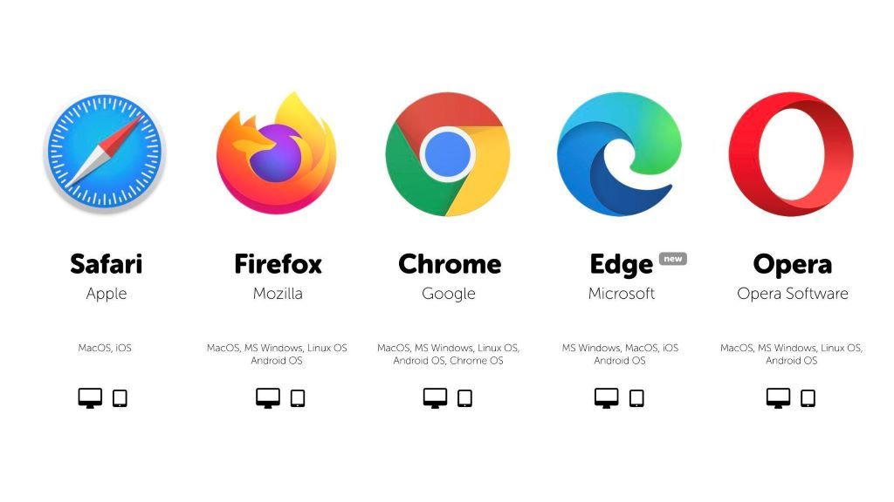
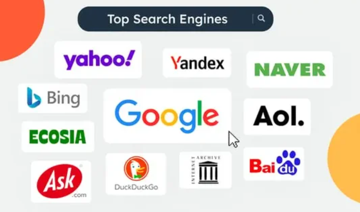

Bedanya browser dengan search engine
Browser adalah software yang terinstall pada perangkat komputer, sedangkan search engine adalah program yang terdapat di internet. Browser adalah software yang berguna untuk membuka halaman website dengan format www, sedangkan search engine berguna untuk menampilkan daftar website yang memuat kata yang di cari. Kamu tidak bisa membuka halaman search engine tanpa browser. Search engine merupakan bagian dari objek internet yang bisa di akses menggunakan sebuah browser. Sekarang browser sudah terintegrasi dengan search engine masing-masing, sehingga akan sedikit sulit membedakan antara keduanya.
Macam Macam Web Browser Dan Search Engine
 Fungsi Web Browser ------------------------------- Fungsi Search Engine
- Mempermudah dalam mencari informasi di internet
- Menyimpan data-data di internet
- Membuka file dengan ekstensi tertentu
- Mendukung pemakai search engine
- Menjaga keamanan website
--------------
- Pencarian Informasi
- Indeksasi Konten
- Penyediaan Tautan
- Pencarian Gambar dan Video
- Analisis Data